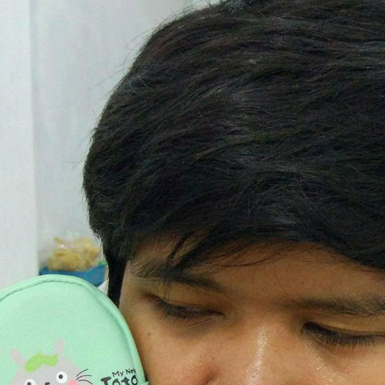

|  |
| Hakikid Amana |
| Phone : +6281336124319 |
Address : Perum PPH Gang Kresna No.7 Ngijo Tasikmadu Karanganyar |
Email : hakivinamana@student.uns.ac.id |
| Gender : Male |
Languages : Bahasa, Javanese, English |
Religion : Islam |
| Nationality : Indonesian |
Date of Birth : 7 Januari 2000 |
Hobbies : Reading, Learning, Playing Games |
| Education |
- SD N 2 Bangsri (2005 - 2011)
- 2 times Regional Chess Champions 2009 & 2010
- Regional Math Olympian 2010
- SMP N 2 Karanganyar (2011 - 2014)
- Finalist National Math Competition 2013
- SMA N 1 Karanganyar (2014 - 2017)
- 2 Times Regional Math Olympian 2015 & 2016
- Finalist National Statistic Competition 2016
- Universitas Sebelas Maret (2017 - Present)
Bachelor Degree of Computer Science
- Microsoft Technology Associate for Database Administrator Fundamental 2018
|
| Skills |
- Understanding java programming language and object oriented programming
- Good data structure and algorithm knowledge
- High problem solving ability
- Good database management system knowledge
- High curiosity and learning spirit
- Discipline and hard worker
- Good public speaking
|